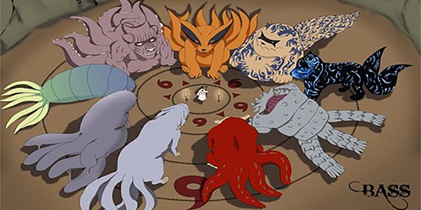

王相杰
前端工程师 西安
-

使用媒体查询、Flex 布局制作的响应式页面。
火影忍者尾兽页面（最简单页面）
-

使用 jQuery 制作的苹果风格轮播
一个苹果风格的轮播组件（轮播）
-

使用原生 JS，借助 Canvas API 和动态 REM 方案（flexible.js）制作的手机画板
一个手机画板（Canvas 画图）
-

使用 jQuery、Slides.js、自制的 Tab 组件，像素级精确还原英雄联盟官网。
英雄联盟官网仿制
-
静态页面制作技术
- 像素级还原设计稿，可以实现响应式以适应手机屏幕。
- CSS 3 动画、Flex 布局、CSS
-
移动端页面
- 使用动态 REM 适配所有手机屏幕
- 手机端页面调试
-
熟练使用 jQuery
- 熟悉 jQuery 常见 API
- 编写 jQuery 插件
-
与后端配合开发
- 熟悉 HTTP 协议，知道 HTTP 请求、响应的定义
- 熟悉 AJAX、Promise、JSON、跨域
自我描述
- 对技术具有无限的热情，喜欢探究技术背后的深层原理。
- 热爱生活，喜欢每天都富有激情的工作状态。
- 工作中一丝不苟并追求完美、不怕吃苦。
- 喜欢与同事打成一片，坚信团队的力量！